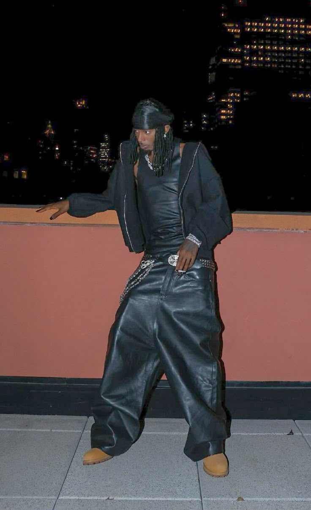
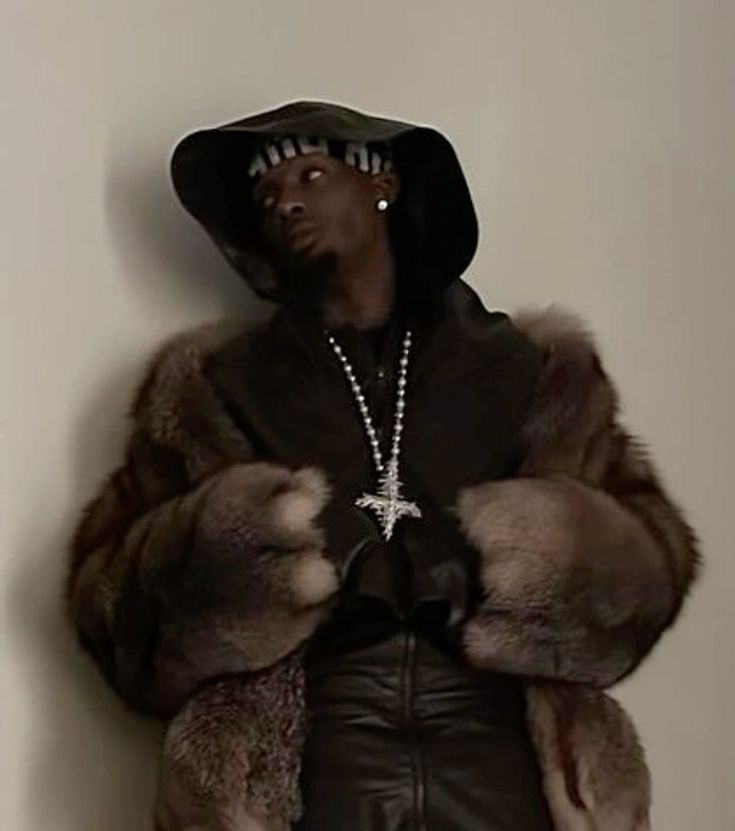
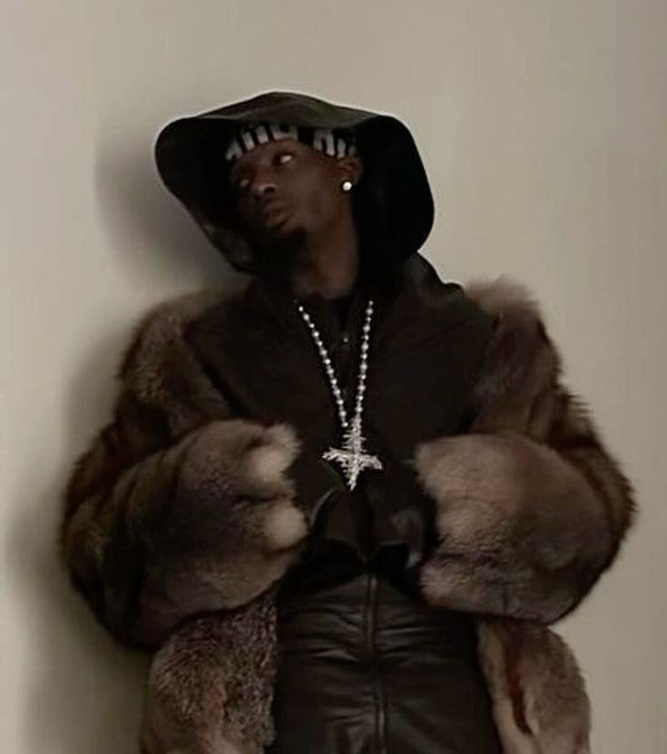

Playboi Carti é, sem dúvida, um dos artistas mais influentes da atualidade, tanto na música quanto na moda, redefinindo o que significa ser um ícone cultural. Seu estilo musical, marcado por vocais experimentais, batidas minimalistas e atmosferas sombrias, influenciou uma geração inteira de rappers e produtores que seguem seu modelo de inovação estética.
Inicio da Carreira
Playboi Carti começou sua carreira por volta de 2011, lançando músicas no SoundCloud sob o nome Sir Cartier. Ainda muito jovem, ele chamou atenção na cena underground de Atlanta com seu estilo diferente, focado mais na sonoridade e na estética do que em letras complexas. Em 2014, adotou o nome Playboi Carti e se juntou ao coletivo Awful Records. Em 2016, sua carreira ganhou força quando se aproximou do grupo A$AP Mob, principalmente de A$AP Rocky, o que lhe deu mais visibilidade e contatos importantes na indústria.

Em 2017, Carti assinou contrato com a Interscope Records e lançou sua primeira mixtape oficial, intitulada "Playboi Carti". O projeto foi um sucesso comercial e consolidou seu nome no cenário do trap. Músicas como “Magnolia” e “wokeuplikethis*” (com Lil Uzi Vert) viralizaram, ajudando a estabelecer a base do que se tornaria o estilo Carti: batidas minimalistas, vocais repetitivos e presença de palco energética.

No ano seguinte, ele lançou seu primeiro álbum de estúdio,"Die Lit" . Embora tenha recebido críticas mistas inicialmente, o álbum foi crescendo em relevância e se transformou em um MARCO cultural entre jovens fãs de trap e hip-hop alternativo. A sonoridade crua, os vocais caóticos e a estética punk fizeram de "Die Lit" um álbum de culto, influenciando diversos artistas da nova geração.

Uma nova era!
Após isso, Carti desapareceu por um tempo. Essa ausência apenas aumentou o mistério em torno dele. Em dezembro de 2020, ele retornou com "Whole Lotta Red", lançado no Natal. Antes de seu lançamento oficial, Whole Lotta Red passou por pelo menos três versões diferentes, todas refeitas por Playboi Carti devido à quantidade massiva de vazamentos. Entre 2019 e 2020, dezenas de músicas vazaram na internet — muitas em versões inacabadas — o que levou o rapper a abandonar projetos inteiros e recomeçar o álbum várias vezes. Faixas como “Kid Cudi (Pissy Pamper)” e “Molly” ganharam muita fama entre os fãs, mesmo sem nunca serem oficialmente lançadas. Varias dessas musicas vazadas furaram a bolha do trap, estourando principalmente no Tik Tok.Esse ciclo constante de vazamentos gerou frustração em Carti, que ficou cada vez mais recluso e silencioso nas redes sociais. A pressão dos fãs por um álbum que já parecia existir em várias formas tornou Whole Lotta Red mais do que um simples projeto: virou uma espécie de mito digital, onde o próprio artista parecia competir com suas versões não autorizadas. O impacto emocional e criativo desses vazamentos moldou o disco final, tornando-o mais agressivo, sombrio e desconectado das expectativas do público — uma resposta direta ao caos que o antecedeu.
Whole lotta red
O efeito Whole lotta red!

Whole Lotta Red não foi apenas mais um álbum de trap — foi um DIVISOR DE AGUAS que quebrou expectativas e remodelou a estética do rap moderno. Mas nem sempre foi assim. Quando Whole Lotta Red foi lançado, a recepção inicial foi amplamente negativa, especialmente por parte dos fãs que passaram anos esperando o projeto. Muitos sentiram decepção imediata ao se depararem com um som muito mais agressivo, barulhento e experimental do que esperavam. As batidas distorcidas, vocais gritados e estrutura não convencional das músicas pegaram grande parte do público de surpresa, principalmente os que estavam apegados às versões vazadas do álbum, que tinham uma sonoridade mais melódica e “tradicional”. Mas com o tempo, passou a ser reconhecido como um trabalho visionário. Carti trocou os flows tradicionais por gritos, vocais rasgados e batidas industriais, criando um som quase punk dentro do trap — algo nunca feito nessa escala antes.
O impacto foi gigante: dezenas de artistas começaram a adotar a estética "rage" e a sonoridade experimental que ele popularizou, abrindo espaço para nomes como Yeat, Ken Carson e Destroy Lonely (ambos da gravadora Opium, fundada pelo próprio Carti). Mais do que influenciar musicalmente, o álbum redefiniu o visual e o comportamento da nova geração: Carti virou um ícone gótico, com estética vampírica, roupas de passarela e postura misteriosa.
Para o próprio Carti, Whole Lotta Red foi uma reinvenção. Ele deixou de ser apenas uma estrela do trap para se tornar uma figura quase mitológica na cultura pop, comparado a artistas que desafiam gêneros como Kanye West ou Lil Wayne em seus momentos mais criativos. A crítica e o público finalmente reconheceram o projeto como um marco da década, um álbum que transformou o "estranho" em tendência, e o experimental em influência duradoura.
I AM MUSIC
A era sombria
MUSIC tambem conhecido como I AM MUSIC é o terceiro album de estudio de Playboi Carti lançado no dia dia 14 de março de 2025. Mas esse album trouxe uma complicação enorme entre os fãs. Carti passou quase 5 anos mentindo sobre o lançamento do album. Em 2021, Carti anunciou uma data supostamente para o seu álbum intitulado Narcissist. Porém, ao chegar a data, ele não lançou nada — apenas uma coleção de roupas (merch). Narcissist foi um álbum descartado por Carti, pois sua voz estava muito semelhante à do rapper Future.
Carti sumiu novamente e só apareceu em 2022, dando uma entrevista na qual revelou o nome do seu mais novo álbum: MUSIC. Ele também falou sobre a música principal desse projeto, Wicked.
Wicked, algum tempo depois, foi vazada na internet. A música apresentava uma vibe totalmente diferente do que Carti havia lançado anteriormente, usando uma voz mais grave — o que se tornou o ponto principal da versão lançada oficialmente.
Em dezembro de 2022, Carti postou em seu Instagram a capa do álbum Music, junto com tweets como “hello Twitter, it's time”, e desapareceu novamente. Carti fez com que os fãs ficassem cada vez mais curiosos sobre o álbum e sobre o que ele estava preparando para o público.
Depois desse sumiço, o nome MUSIC começou a ganhar vida própria entre os fãs. A comunidade ficou ainda mais ansiosa, com teorias circulando sobre possíveis datas de lançamento, colaborações e mudanças sonoras. A estética usada nas postagens de Carti era minimalista, sombria e enigmática — algo que combinava com a nova fase que ele parecia estar entrando. Ao longo de 2023, poucas informações oficiais surgiram. Carti fez aparições pontuais em shows e festivais, muitas vezes com performances caóticas, novas versões de faixas e visual diferente. A cada aparição, mais mistério.
A campanha promocional do álbum de Carti começou sutilmente em 7 de dezembro de 2023, quando ele postou uma história enigmática no Instagram dizendo: "Eu sou música", seguida por outra história mostrando a resposta de Pharrell Williams, simplesmente dizendo "Prepare-se". Isso gerou especulações imediatas sobre um próximo lançamento. Mais tarde naquele dia, DJ Akademiks anunciou que o álbum de Carti deveria ser lançado em janeiro de 2024, promovendo-o como "a melhor coisa que você já ouviu".
Em 8 de dezembro de 2023, Carti intensificou a promoção lançando a música "Different Day" pela conta do Opium no Instagram, acompanhada de um videoclipe completo. No entanto, a música não recebeu um lançamento oficial em plataformas de streaming, mantendo um apelo exclusivo e underground. Nas semanas seguintes, Carti continuou essa abordagem não convencional, lançando uma série de singles promocionais: "2024" em 14 de dezembro, "H00dByAir" em 19 de dezembro, "Backr00ms" com Travis Scott em 1º de janeiro de 2024, "EvilJ0rdan" em 15 de janeiro, e "Ketamine" em 12 de março. "H00dByAir", "EvilJ0rdan" e "Ketamine" aparecem em Music sob títulos diferentes. Cada lançamento foi acompanhado de um videoclipe, sendo a maioria exclusivo do Instagram ou YouTube, aumentando ainda mais a expectativa em torno do álbum.
Depois de muita espera, aguardos e mentiras, MUSIC finalmente é lançado e é um sucesso absoluto.

Discografia:
- Playboi Carti, mixtape (2027)
- Die Lit (2018)
- Whole Lotta red (2020)
- Music (2025)
Moda
A influencia de Playboi Carti no mundo da moda.
Playboi Carti não é apenas uma figura marcante na música — sua estética fashion redefiniu códigos de estilo para uma geração inteira. Ao longo dos anos, Carti se transformou de um rapper promissor em um verdadeiro ícone da moda contemporânea.
O Estilo Opium
O chamado estilo Opium, nome derivado de seu coletivo e gravadora Opium, mistura elementos góticos, punk, cyber e avant-garde. As roupas são marcadas por tons escuros, silhuetas ousadas e peças que se assemelham mais a uniformes de um futuro distópico do que à moda tradicional de rua.
 

Carti popularizou o uso de marcas de nicho como Rick Owens, Raf Simons, Balenciaga (sob direção de Demna), além de colaborar com designers underground e incentivar novos talentos da moda. Seu impacto foi tão profundo que muitos fãs passaram a adotar a estética como um estilo de vida, influenciando desde cortes de cabelo até o uso de lentes vermelhas e maquiagens escuras.
Impacto no Mundo da Moda
A influência de Carti ultrapassou a música e chegou nas passarelas e editoriais. Sua estética anti-moda virou referência entre jovens estilistas, e hoje é comum ver elementos do estilo Opium em marcas independentes e até em coleções de grandes grifes.
O coletivo Opium, que inclui artistas como Destroy Lonely, Ken Carson e Homixide Gang, também ajuda a consolidar esse universo visual. Cada membro reforça a identidade visual do grupo, criando uma imagem coesa e poderosa.
O Presente e o Futuro
Em 2025, o estilo de Carti ainda é extremamente influente. Ele continua a desafiar normas, com aparições públicas que misturam alta-costura com referências de subculturas urbanas. Sua estética é replicada nas redes sociais, em marcas de moda jovem e até em filtros e avatares virtuais.
Playboi Carti transformou sua imagem em uma linguagem visual própria — um feito raro e potente no mundo da moda. Seu legado já está marcado como um dos mais disruptivos da cultura pop recente.


OPIUM
o coletivo mais influente dessa geração
Opium (também conhecido como 00pium) é a gravadora e coletivo de rap fundado em 2019 pelo Playboi Carti. a gravadora é composta por:
- Playboi Carti
- Ken Carson
- Destroy Lonely
- Homixide Gang
a Opium foi muito importante para o Playboi carti se manter vivo todos esses anos parado. os membrros da gravadora que popularizaram TANTO esse estilo mais dark e sombrio que eles estavam trazendo. tanto nas musicas como na moda.
| Conquistas | |
|---|---|
| 134 milhões de streams em music seu primeiro dia | 2025 |
| Music estreou no topo da Billboard 200 com 298.000 vendidas | 2025 |
| O projeto marcou a maior semana de streaming para qualquer álbum desde que The Tortured Poets Department, de Taylor Swift | 2025 |
| Todas as 30 músicas estrearam simultaneamente na Billboard Hot 100 | 2025 |
| Music foi a MAIOR estreia de um album em 2025 | 2025 |
Informaçoes adicionais
Carti ja foi preso no minimo 5 vezes por agressao fisica e dirigir em alta velocidade